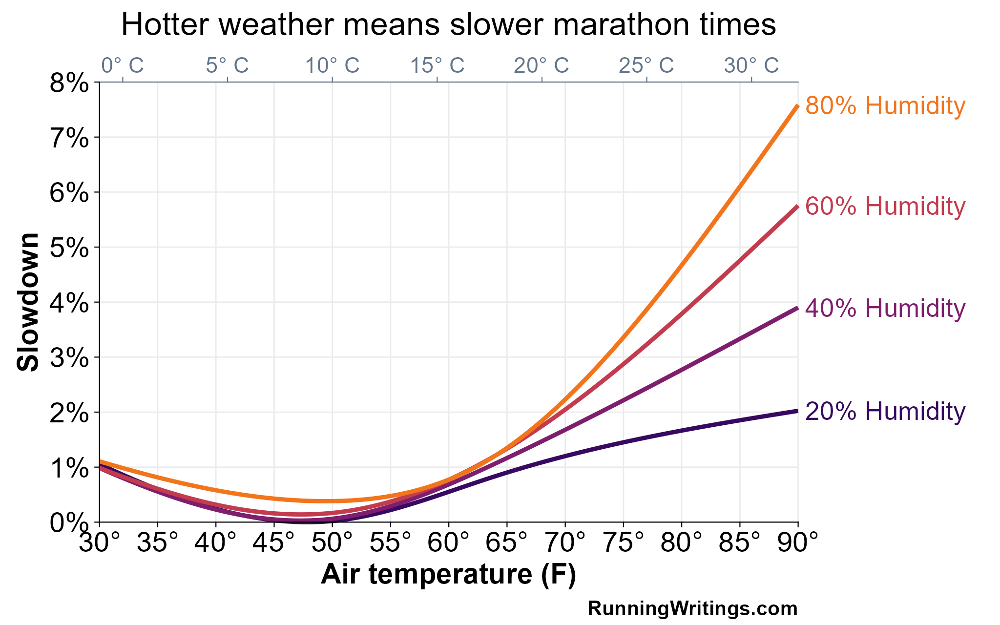

Pace adjustments for heat and humidity
How to usearrow_upward
This app calculates pace adjustments for running long workouts and races in hot and humid conditions. You can input the local weather as a heat index, temperature + relative humidity, or temperature + dew point.
The heat-adjusted paces come from a statistical model fit to data from 3,891 marathon runners across 754 different races, though the pace adjustments are also a good estimate for any long continuous effort, even if it’s not a marathon race.
Keep in mind that the predictions from this app are an estimated average across individuals. Factors like heat acclimation, sun exposure, shade, wind, and individual heat tolerance affect how much a given set of weather conditions will affect you specifically.
Likewise, the structure of your workout matters too. For example, 40 min continuous at half marathon pace will be affected by heat to a much greater degree than 10 x 4 minutes at half marathon pace with one minute of walking rest, even though the total workload is the same.
Heat-adjusted pace and ideal-weather effortarrow_upward
This calculator has two modes to deal with the most common use cases. “Pace mode” (the default) allows you to convert your actual workout or race pace into a predicted ideal-weather pace. For example:
>Running at 7:00/mi pace on a day with a heat index of 80° F is the same effort as running 6:50/mi in ideal conditions
Pace mode is useful when you ran a workout or a race in hot conditions, and want to know what you might’ve been capable of in ideal weather.
“Effort mode,” in contrast, can be enabled by flipping the toggle, and will convert your ideal-weather pace into a heat-adjusted pace (or “HAP”). In this mode, the interpretation of the calculator is as follows:
>Running at 7:00/mi cool-weather effort on a day with a heat index of 80° will result in an actual pace of 7:10/mi in the heat.
Effort mode is useful when you know what kind of shape you are in during ideal conditions, but need to adjust your workout or race pace for hot weather.
Temperature, humidity, dew point, and heat index
All runners know that hot weather is about more than just the thermometer. The humidity also affects how efficiently your body can shed heat via sweating, which is why hot and humid conditions are so much worse than a dry heat.
This heat-adjusted pace calculator has three different ways to specify the weather conditions to take temperature and humidity into account: heat index, heat + relative humidity, and heat + dew point.
The heat index is an empirical combination of heat and humidity that tries to capture how hot a given temperature and humidity “feels” compared with a standard humidity.
Heat index is empirically derived from data on (sedentary) human subjects, and does a reasonable job, but because the calculation bakes in a number of assumptions that may not be valid during running, adjusting workout paces with heat index is going to be inherently less accurate than using heat and humidity or heat and dew point.
The heat index used in the data analysis for this web app is specifically the United States National Weather Service’s heat index equation, developed by Lans P. Rothfusz in 1990. Note that other heat-index-like measures, such as Humidex, RealFeel, and FeelsLike temperatures, may not agree with the NWS heat index, and also suffer from the same baked-in assumptions.
The temperature + humidity and temperature + dew point calculations, in contrast, allow the marathon data to “speak for themselves”—the model explicitly allows for heat and humidity to interact in a nonlinear way on running times, as follows:
Temperature, relative humidity, and dewpoint are deterministically linked: if you know air temperature and the dew point, you can calculate relative humidity (0–100%), and vice versa. For this reason, the temperature + humidity and temperature + dew point modes are equally accurate and give identical results.
Dew point has some mathematical constraints: it cannot be higher than the air temperature, so if you reduce the temperature to below the dew point, the dew point will come down as well.
Cold-adjusted pace for runners
This app is primarily designed for heat-related adjustments, but the underlying dataset does have enough examples to provide a rudimentary adjustment for cold conditions as well—marathon performance starts to suffer, albeit very modestly, once temperatures approach freezing (32° F / 0° C).
I have intentionally left this capability enabled in the model, but you should be much more cautious about cold-weather adjustments. Air temperatures below freezing are very rare in the dataset, so the app will flag a warning about reliability for very cold temps.
Is this heat adjusted pace model accurate? A few case studiesarrow_upward
Let’s look at a few case studies on performance in hot and humid conditions to see how this app’s predictions fare.
First up, the men’s marathon at the 2007 World Championships: the race was held in Osaka, Japan, in brutal heat and humidity: 82° F (28 C) and 72% humidity at the start of the race. The winner, Luke Kibet, ran 2:15:59—a pace of 5:11/mi. In these conditions, his “HAP,” according to the app, is 4:55/mi, which would be a 2:08:55 in ideal conditions. What was Luke Kibet’s personal best at the time? 2:08:52!
Second, the late, great, Sammy Wanjiru’s 2:06:32 Olympic Record (4:50/mi) at the 2008 Beijing Olympics. The New York Times reports that weather at the start was 70° F (21 C) with 72% humidity (though temperatures rose throughout the race). Using the starting conditions, Wanjiru’s performance “converts” to 2:04:32—faster than his official personal best of 2:05:10, but not at all out of line with what you would expect from a 58:33 half marathoner had his career not been tragically cut short.
Third, the women’s winner at the infamously hot 2007 Chicago Marathon, which was so hot that the race was called off after a few hours. In a race that rose to upwards of 81° F (27° C) and 62% humidity, Berhane Adere won in 2:33:49 (5:52/mi). Her personal best is 2:20:42 (5:22/mi), which is much faster than the heat-adjusted prediction of 2:28:35 (5:40/mi), showing that there’s still a good amount of error that can come into play (though Adere’s next two races, a 2:22 and a 2:25, are somewhat closer to the heat-adjusted pace from Chicago 2007).
Lastly, a race that has not happened yet: This summer’s World Championships will take place in Tokyo in August. The women’s marathon is on Sunday, September 14 at 8 AM Tokyo time, and the men’s race is the following day.
At the time of writing (early September), the long-range weather forecast predicts mid-race conditions of about 84° F (29° C) and a dew point of 73° F (23° C), which could make the pace 15–16 seconds per mile slow. How accurate will this heat-adjusted pace be? Check back afterwards and find out!
Limitationsarrow_upward
This app’s heat-adjusted paces are a “smeared out” estimate across runners of varying levels of heat acclimation. Adapting to the heat makes a big difference in your performance in the heat, so if you’re well adapted, you may be able to beat the predictions of this model, and conversely, if you are not heat-adapted, you may fare worse.
Additionally, this app was fit to data from marathon performances. Heat will not affect shorter races and workouts as much. However, marathon performances are a good starting point for heat adjusted paces, since a two, three, or four-hour event basically requires a thermal equilibrium—your pace is going to asymptote at a value where your heat production equals your heat loss. In a shorter race, like the 5k, you can outrun your thermal limits.
This calculator uses the weather conditions at the halfway point of the race for the race winner (so, about one hour into the race). The fact that slower runners take longer to finish a race necessarily means they are exposed to higher temperatures, at least for races that start in the morning.
Another limitation for slower runners is that the data used to fit the model only go back to about a 3:30 marathon (8:00/mi or 5:00/km). Slower runners do have more time spent in the heat, but also have a lower absolute metabolic rate, and therefore a lower heat production rate, so some of the downsides of spending more time in the heat get offset. Still, I wish I had more data on 4:00–5:00 marathoners.
The data used to build this app are quite diverse, but some weather conditions are not often seen at major marathons. Specifically, humidity values below 25% are extremely rare, and temperatures below freezing (0° C, 32° F) or above 95° F / 35° C / are rare as well. There are also some edge cases where other weather-related factors might come into play: when humidity is measured at close to 100%, for example, that’s often because it’s raining!
Currently this calculator does not support a mode for WetBulb Globe Temperature (WBGT) because it is usually only used in scientific research and for determining the weather alert status at road races, since you have to actually take a measurement—you can’t predict or forecast it. But if you’d like me to add WBGT it will not be too hard. If I get enough interest I may add it as an additional input mode later.
This app may underestimate the individual-level effects of heatarrow_upward
One thing to be aware of is that the underlying data used to fit this model might introduce a subtle bias towards less aggressive adjustments for hot conditions.
The statistical model that powers this heat-adjusted pace app relies on data reported in a 2022 paper by Konstantinos Mantzios and colleagues. The dataset, and the paper, are excellent, but the methods do introduce a small issue.
The basic idea is that you can estimate the effects of heat and humidity by looking at the effects on races for 1st place, 5th place, 50th place, 100th place, etc., at many different races across many different years. If, for example, this year’s London Marathon is very hot, you can see how much slower the 100th place finisher is compared with another year that had better conditions.
Now, here’s where the subtle bias is introduced: fitting such a model assumes that the runner who finished 100th this year is basically interchangeable with the runner who finished 100th last year. In hot conditions, though, you would expect that the person who finished 100th would be more likely to be a runner who tolerates the heat well, whereas in cool conditions, you would not expect a runner who tolerates heat to do any better or worse than average.
So, if we are interested in the effects of hot weather on a typical runner, who is neither well-suited nor poorly suited for hot conditions, this equal-finish-place method could lead us to underestimate the effects of heat. I don’t expect this to be a huge issue, but it’s worth keeping in mind.
This problem could be solved with a longitudinal dataset: tracking the same runners over several years, investigating how their performance changes in hot versus cool conditions. I’m currently exploring options for building such a dataset.
Details on the statistical modelarrow_upward
One other note regarding the model: this app does not directly implement the equations that Mantzios et al. report in their paper—instead, I use their open-access data to fit a different statistical model to more directly account for some of the other sources of variation in marathon performance, such as the difficulty of different race courses and long-term secular changes in marathon performance.
This app, plus the R code used to fit the model, are open-source on GitHub if you’d like to check out how I fit the model in detail.
Support my workarrow_upward
If you want to find out when I have new apps and research coming out, sign up for my email list below! It's the best way to follow my work. I have several major projects coming out soon that you won't want to miss
If you enjoy my work, be sure to check out my book, Modern Training and Physiology - it covers a scientific approach to training for events from 800m to the 10k. It's available on Amazon as both an eBook and paperback.
This app is 100% free and open-source. If you find this app useful, you can share it with your friends or post about it on social media.
Contactarrow_upward
If you've got feedback on this web app, or if you've found a bug, please reach out! You can reach me at john@runningwritings.com.
I'm also on X, but the best way to follow my work is my email list!